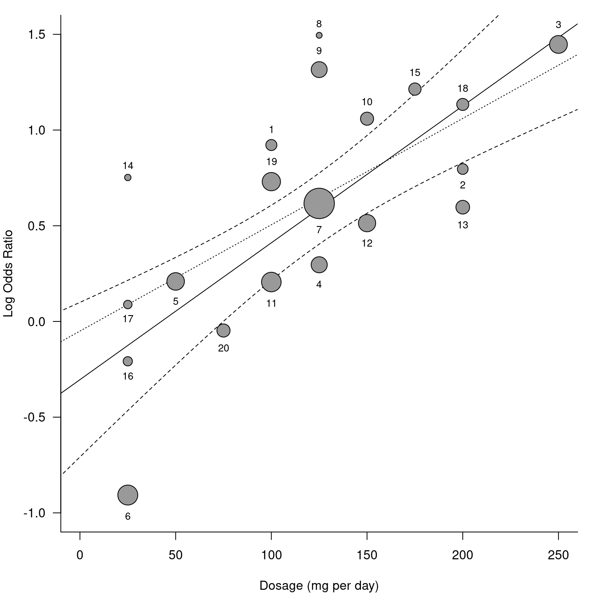
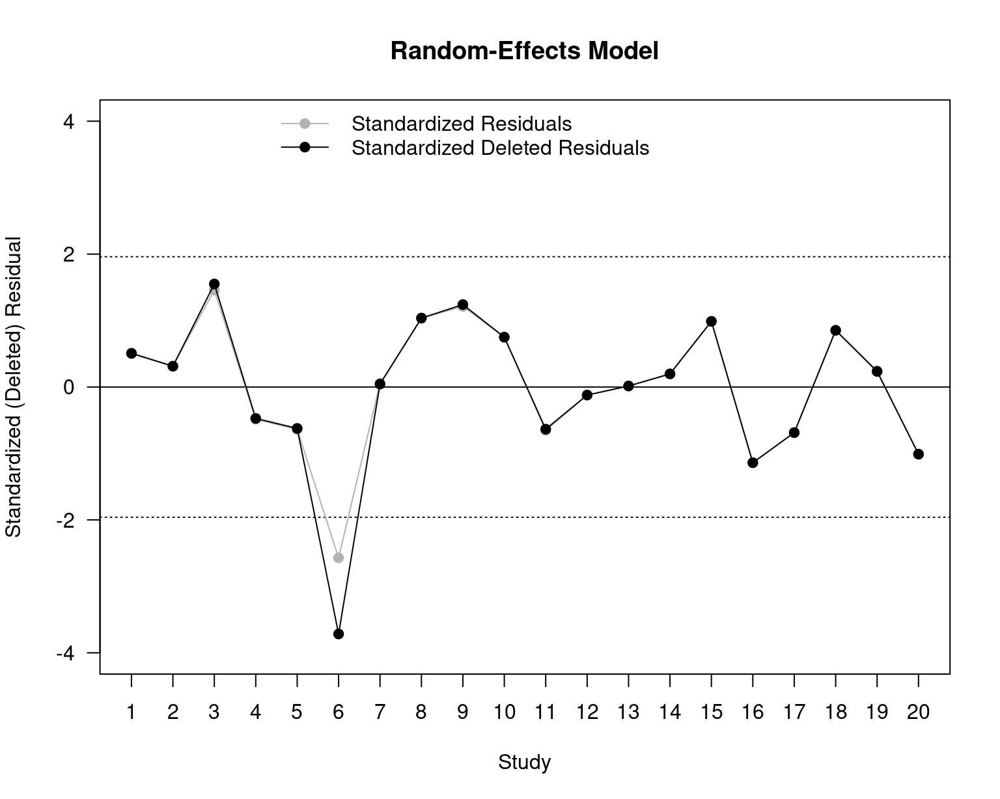
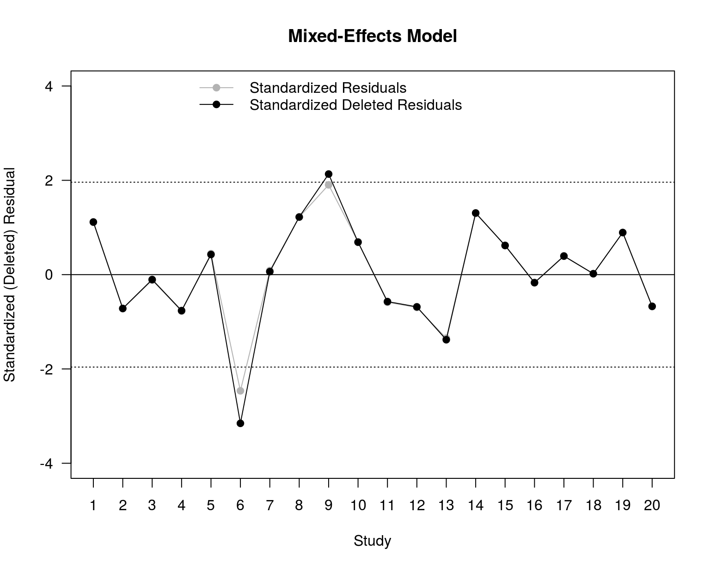
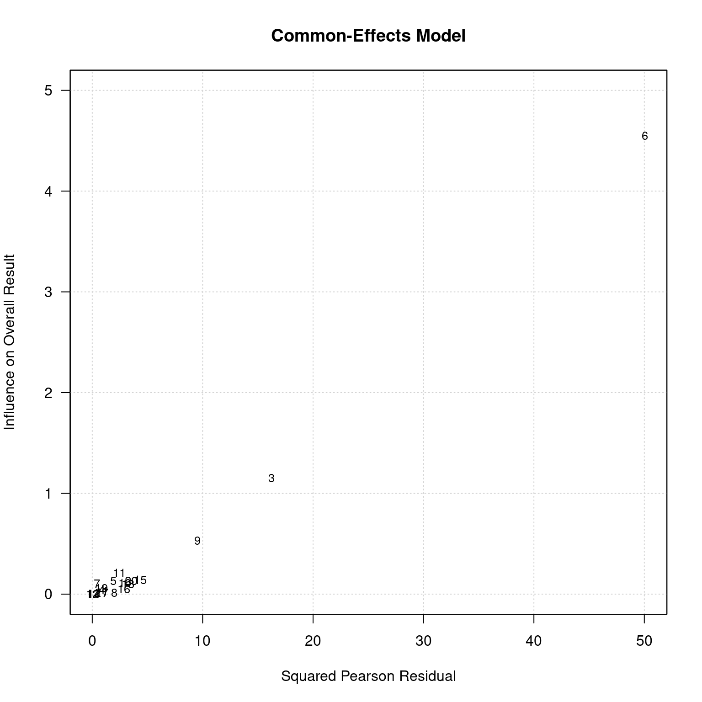
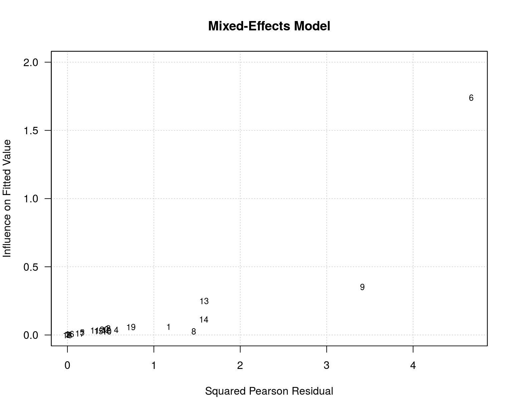
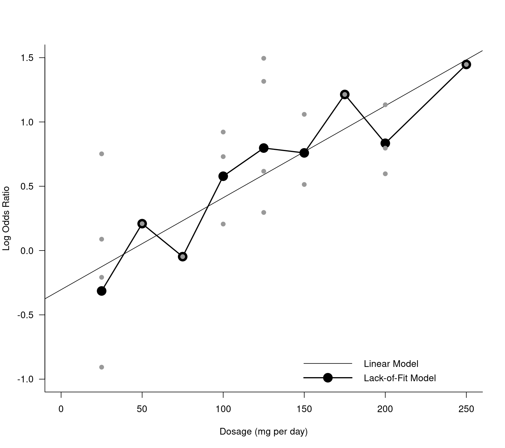
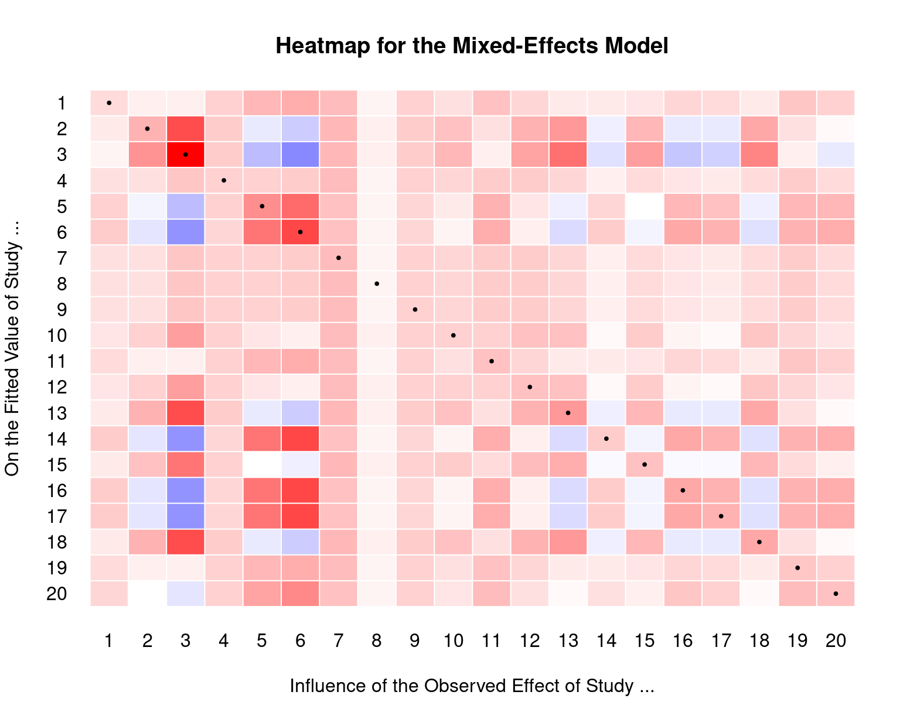

Studies to Illustrate Model Checking Methods
dat.viechtbauer2021.RdResults from 20 hypothetical randomized clinical trials examining the effectiveness of a medication for treating some disease.
dat.viechtbauer2021
Format
The data frame contains the following columns:
| trial | numeric | trial number |
| nTi | numeric | number of patients in the treatment group |
| nCi | numeric | number of patients in the control group |
| xTi | numeric | number of patients in the treatment group with remission |
| xCi | numeric | number of patients in the control group with remission |
| dose | numeric | dosage of the medication provided to patients in the treatment group (in milligrams per day) |
Details
The dataset was constructed for the purposes of illustrating the model checking and diagnostic methods described in Viechtbauer (2021). The code below provides the results for many of the analyses and plots discussed in the book chapter.
Source
Viechtbauer, W. (2021). Model checking in meta-analysis. In C. H. Schmid, T. Stijnen, & I. R. White (Eds.), Handbook of meta-analysis (pp. 219-254). Boca Raton, FL: CRC Press. https://doi.org/10.1201/9781315119403
Examples
### copy data into 'dat' dat <- dat.viechtbauer2021 ### calculate log odds ratios and corresponding sampling variances dat <- escalc(measure="OR", ai=xTi, n1i=nTi, ci=xCi, n2i=nCi, add=1/2, to="all", data=dat) dat#> trial nTi nCi xTi xCi dose yi vi #> 1 1 66 59 42 24 100 0.9217 0.1333 #> 2 2 59 65 42 34 200 0.7963 0.1414 #> 3 3 253 257 96 32 250 1.4472 0.0519 #> 4 4 137 144 51 44 125 0.2961 0.0634 #> 5 5 327 326 47 39 50 0.2091 0.0534 #> 6 6 584 588 38 87 25 -0.9069 0.0412 #> 7 7 526 532 390 323 125 0.6166 0.0178 #> 8 8 28 30 10 3 125 1.4950 0.4714 #> 9 9 191 201 165 126 125 1.3157 0.0649 #> 10 10 86 94 58 39 150 1.0592 0.0955 #> 11 11 229 221 72 60 100 0.2060 0.0429 #> 12 12 153 144 79 56 150 0.5137 0.0550 #> 13 13 93 95 48 35 200 0.5970 0.0873 #> 14 14 40 40 8 4 25 0.7521 0.3980 #> 15 15 85 88 44 21 175 1.2139 0.1079 #> 16 16 100 107 10 13 25 -0.2081 0.1909 #> 17 17 72 64 11 9 25 0.0884 0.2265 #> 18 18 80 74 47 23 200 1.1338 0.1129 #> 19 19 191 195 144 116 100 0.7304 0.0491 #> 20 20 85 85 48 49 75 -0.0474 0.0949### number of studies k <- nrow(dat) ### fit models res.CE <- rma(yi, vi, data=dat, method="FE") res.CE#> #> Fixed-Effects Model (k = 20) #> #> I^2 (total heterogeneity / total variability): 81.70% #> H^2 (total variability / sampling variability): 5.46 #> #> Test for Heterogeneity: #> Q(df = 19) = 103.8068, p-val < .0001 #> #> Model Results: #> #> estimate se zval pval ci.lb ci.ub #> 0.5295 0.0586 9.0328 <.0001 0.4146 0.6443 *** #> #> --- #> Signif. codes: 0 ‘***’ 0.001 ‘**’ 0.01 ‘*’ 0.05 ‘.’ 0.1 ‘ ’ 1 #>#> #> Random-Effects Model (k = 20; tau^2 estimator: DL) #> #> tau^2 (estimated amount of total heterogeneity): 0.3174 (SE = 0.1472) #> tau (square root of estimated tau^2 value): 0.5634 #> I^2 (total heterogeneity / total variability): 81.70% #> H^2 (total variability / sampling variability): 5.46 #> #> Test for Heterogeneity: #> Q(df = 19) = 103.8068, p-val < .0001 #> #> Model Results: #> #> estimate se zval pval ci.lb ci.ub #> 0.5867 0.1451 4.0425 <.0001 0.3022 0.8712 *** #> #> --- #> Signif. codes: 0 ‘***’ 0.001 ‘**’ 0.01 ‘*’ 0.05 ‘.’ 0.1 ‘ ’ 1 #>#> #> Fixed-Effects with Moderators Model (k = 20) #> #> I^2 (residual heterogeneity / unaccounted variability): 55.49% #> H^2 (unaccounted variability / sampling variability): 2.25 #> #> Test for Residual Heterogeneity: #> QE(df = 18) = 40.4392, p-val = 0.0018 #> #> Test of Moderators (coefficient 2): #> QM(df = 1) = 63.3676, p-val < .0001 #> #> Model Results: #> #> estimate se zval pval ci.lb ci.ub #> intrcpt -0.4235 0.1333 -3.1772 0.0015 -0.6847 -0.1622 ** #> dose 0.0079 0.0010 7.9604 <.0001 0.0059 0.0098 *** #> #> --- #> Signif. codes: 0 ‘***’ 0.001 ‘**’ 0.01 ‘*’ 0.05 ‘.’ 0.1 ‘ ’ 1 #>#> #> Mixed-Effects Model (k = 20; tau^2 estimator: DL) #> #> tau^2 (estimated amount of residual heterogeneity): 0.0895 (SE = 0.0582) #> tau (square root of estimated tau^2 value): 0.2992 #> I^2 (residual heterogeneity / unaccounted variability): 55.49% #> H^2 (unaccounted variability / sampling variability): 2.25 #> R^2 (amount of heterogeneity accounted for): 71.80% #> #> Test for Residual Heterogeneity: #> QE(df = 18) = 40.4392, p-val = 0.0018 #> #> Test of Moderators (coefficient 2): #> QM(df = 1) = 22.6429, p-val < .0001 #> #> Model Results: #> #> estimate se zval pval ci.lb ci.ub #> intrcpt -0.3041 0.2061 -1.4758 0.1400 -0.7080 0.0998 #> dose 0.0071 0.0015 4.7585 <.0001 0.0042 0.0101 *** #> #> --- #> Signif. codes: 0 ‘***’ 0.001 ‘**’ 0.01 ‘*’ 0.05 ‘.’ 0.1 ‘ ’ 1 #>### forest and bubble plot par(mar=c(5,4,1,2)) forest(dat$yi, dat$vi, psize=0.8, efac=0, xlim=c(-4,6), ylim=c(-3,23), cex=1, width=c(5,5,5), xlab="Log Odds Ratio (LnOR)")tmp <- regplot(res.ME, xlim=c(0,250), ylim=c(-1,1.5), predlim=c(0,250), shade=FALSE, digits=1, xlab="Dosage (mg per day)", psize="seinv", plim=c(NA,5), bty="l", las=1, lty=c("solid", "dashed"), label=TRUE, labsize=0.8, offset=c(1,0.7))res.sub <- rma(yi, vi, mods = ~ dose, data=dat, method="DL", subset=-6) abline(res.sub, lty="dotted")par(mar=c(5,4,4,2)) ### number of standardized deleted residuals larger than +-1.96 in each model sum(abs(rstudent(res.CE)$z) >= qnorm(.975))#> [1] 4#> [1] 3#> [1] 1#> [1] 2### plot of the standardized deleted residuals for the RE and ME models plot(NA, NA, xlim=c(1,20), ylim=c(-4,4), xlab="Study", ylab="Standardized (Deleted) Residual", xaxt="n", main="Random-Effects Model", las=1)legend("top", pch=19, col=c("gray70","black"), lty="solid", legend=c("Standardized Residuals","Standardized Deleted Residuals"), bty="n")plot(NA, NA, xlim=c(1,20), ylim=c(-4,4), xlab="Study", ylab="Standardized (Deleted) Residual", xaxt="n", main="Mixed-Effects Model", las=1)legend("top", pch=19, col=c("gray70","black"), lty="solid", legend=c("Standardized Residuals","Standardized Deleted Residuals"), bty="n")### Baujat plots baujat(res.CE, main="Common-Effects Model", xlab="Squared Pearson Residual", ylim=c(0,5), las=1)### GOSH plots (skipped because this takes quite some time to run) if (FALSE) { res.GOSH.CE <- gosh(res.CE, subsets=10^7) plot(res.GOSH.CE, cex=0.2, out=6, xlim=c(-0.25,1.25), breaks=c(200,100)) res.GOSH.ME <- gosh(res.ME, subsets=10^7) plot(res.GOSH.ME, het="tau2", out=6, breaks=50, adjust=0.6, las=1) } ### plot of treatment dosage against the standardized residuals plot(dat$dose, rstandard(res.ME)$z, pch=19, xlab="Dosage (mg per day)", ylab="Standardized Residual", xlim=c(0,250), ylim=c(-2.5,2.5), las=1)#> #> Mixed-Effects Model (k = 20; tau^2 estimator: DL) #> #> tau^2 (estimated amount of residual heterogeneity): 0.0807 (SE = 0.0568) #> tau (square root of estimated tau^2 value): 0.2840 #> I^2 (residual heterogeneity / unaccounted variability): 52.00% #> H^2 (unaccounted variability / sampling variability): 2.08 #> R^2 (amount of heterogeneity accounted for): 74.58% #> #> Test for Residual Heterogeneity: #> QE(df = 17) = 35.4193, p-val = 0.0055 #> #> Test of Moderators (coefficients 2:3): #> QM(df = 2) = 25.7249, p-val < .0001 #> #> Model Results: #> #> estimate se zval pval ci.lb ci.ub #> intrcpt -0.6191 0.3163 -1.9571 0.0503 -1.2390 0.0009 . #> dose 0.0136 0.0053 2.5694 0.0102 0.0032 0.0240 * #> I(dose^2) -0.0000 0.0000 -1.2610 0.2073 -0.0001 0.0000 #> #> --- #> Signif. codes: 0 ‘***’ 0.001 ‘**’ 0.01 ‘*’ 0.05 ‘.’ 0.1 ‘ ’ 1 #>### lack-of-fit model resLOF <- rma(yi, vi, mods = ~ dose + factor(dose), data=dat, method="DL", btt=3:9)#> Warning: Redundant predictors dropped from the model.resLOF#> #> Mixed-Effects Model (k = 20; tau^2 estimator: DL) #> #> tau^2 (estimated amount of residual heterogeneity): 0.1285 (SE = 0.0981) #> tau (square root of estimated tau^2 value): 0.3585 #> I^2 (residual heterogeneity / unaccounted variability): 60.32% #> H^2 (unaccounted variability / sampling variability): 2.52 #> R^2 (amount of heterogeneity accounted for): 59.50% #> #> Test for Residual Heterogeneity: #> QE(df = 11) = 27.7226, p-val = 0.0036 #> #> Test of Moderators (coefficients 3:9): #> QM(df = 7) = 3.5712, p-val = 0.8276 #> #> Model Results: #> #> estimate se zval pval ci.lb ci.ub #> intrcpt -0.5099 0.3035 -1.6803 0.0929 -1.1048 0.0849 . #> dose 0.0078 0.0022 3.5002 0.0005 0.0034 0.0122 *** #> factor(dose)50 0.3276 0.4916 0.6663 0.5052 -0.6360 1.2912 #> factor(dose)75 -0.1246 0.5257 -0.2371 0.8126 -1.1550 0.9057 #> factor(dose)100 0.3051 0.3433 0.8887 0.3741 -0.3677 0.9779 #> factor(dose)125 0.3285 0.3333 0.9856 0.3243 -0.3247 0.9817 #> factor(dose)150 0.0950 0.4135 0.2298 0.8183 -0.7154 0.9054 #> factor(dose)175 0.3538 0.5698 0.6209 0.5347 -0.7631 1.4707 #> factor(dose)200 -0.2215 0.4392 -0.5042 0.6141 -1.0822 0.6393 #> #> --- #> Signif. codes: 0 ‘***’ 0.001 ‘**’ 0.01 ‘*’ 0.05 ‘.’ 0.1 ‘ ’ 1 #>### scatter plot to illustrate the lack-of-fit model regplot(res.ME, xlim=c(0,250), ylim=c(-1.0,1.5), xlab="Dosage (mg per day)", ci=FALSE, predlim=c(0,250), psize=1, pch=19, col="gray60", digits=1, lwd=1, bty="l", las=1)dosages <- sort(unique(dat$dose)) lines(dosages, fitted(resLOF)[match(dosages, dat$dose)], type="o", pch=19, cex=2, lwd=2)legend("bottomright", legend=c("Linear Model", "Lack-of-Fit Model"), pch=c(NA,19), col="black", lty="solid", lwd=c(1,2), pt.cex=c(1,2), seg.len=4, bty="n")### checking normality of the standardized deleted residuals qqnorm(res.ME, type="rstudent", main="Standardized Deleted Residuals", pch=19, label="out", lwd=2, pos=24, ylim=c(-4,3), lty=c("solid", "dotted"), las=1)### checking normality of the random effects sav <- qqnorm(ranef(res.ME)$pred, main="BLUPs of the Random Effects", cex=1, pch=19, xlim=c(-2.2,2.2), ylim=c(-0.6,0.6), las=1)### hat values for the CE and RE models plot(NA, NA, xlim=c(1,20), ylim=c(0,0.21), xaxt="n", las=1, xlab="Study", ylab="Hat Value")legend("topright", pch=19, col=c("gray70","black"), lty="solid", legend=c("Common-Effects Model", "Random-Effects Model"), bty="n")### heatmap of the hat matrix for the ME model cols <- colorRampPalette(c("blue", "white", "red"))(101) h <- hatvalues(res.ME, type="matrix") image(1:nrow(h), 1:ncol(h), t(h[nrow(h):1,]), axes=FALSE, xlab="Influence of the Observed Effect of Study ...", ylab="On the Fitted Value of Study ...", col=cols, zlim=c(-max(abs(h)),max(abs(h))))### plot of leverages versus standardized residuals for the ME model plot(hatvalues(res.ME), rstudent(res.ME)$z, pch=19, cex=0.2+3*sqrt(cooks.distance(res.ME)), las=1, xlab="Leverage (Hat Value)", ylab="Standardized Deleted Residual", xlim=c(0,0.35), ylim=c(-3.5,2.5))ids <- c(3,6,9) text(hatvalues(res.ME)[ids] + c(0,0.013,0.010), rstudent(res.ME)$z[ids] - c(0.18,0,0), ids)### plot of the Cook's distances for the ME model plot(1:20, cooks.distance(res.ME), ylim=c(0,1.6), type="o", pch=19, las=1, xaxt="n", yaxt="n", xlab="Study", ylab="Cook's Distance")### plot of the leave-one-out estimates of tau^2 for the ME model x <- influence(res.ME) plot(1:20, x$inf$tau2.del, ylim=c(0,0.15), type="o", pch=19, las=1, xaxt="n", xlab="Study", ylab=expression(paste("Estimate of ", tau^2, " without the ", italic(i), "th study")))### plot of the covariance ratios for the ME model plot(1:20, x$inf$cov.r, ylim=c(0,2.0), type="o", pch=19, las=1, xaxt="n", xlab="Study", ylab="Covariance Ratio")### fit mixed-effects model without studies 3 and/or 6 rma(yi, vi, mods = ~ dose, data=dat, method="DL", subset=-3)#> #> Mixed-Effects Model (k = 19; tau^2 estimator: DL) #> #> tau^2 (estimated amount of residual heterogeneity): 0.0994 (SE = 0.0645) #> tau (square root of estimated tau^2 value): 0.3153 #> I^2 (residual heterogeneity / unaccounted variability): 57.63% #> H^2 (unaccounted variability / sampling variability): 2.36 #> R^2 (amount of heterogeneity accounted for): 64.04% #> #> Test for Residual Heterogeneity: #> QE(df = 17) = 40.1225, p-val = 0.0012 #> #> Test of Moderators (coefficient 2): #> QM(df = 1) = 15.7509, p-val < .0001 #> #> Model Results: #> #> estimate se zval pval ci.lb ci.ub #> intrcpt -0.3064 0.2290 -1.3381 0.1809 -0.7553 0.1424 #> dose 0.0072 0.0018 3.9687 <.0001 0.0037 0.0108 *** #> #> --- #> Signif. codes: 0 ‘***’ 0.001 ‘**’ 0.01 ‘*’ 0.05 ‘.’ 0.1 ‘ ’ 1 #>#> #> Mixed-Effects Model (k = 19; tau^2 estimator: DL) #> #> tau^2 (estimated amount of residual heterogeneity): 0.0321 (SE = 0.0375) #> tau (square root of estimated tau^2 value): 0.1792 #> I^2 (residual heterogeneity / unaccounted variability): 30.17% #> H^2 (unaccounted variability / sampling variability): 1.43 #> R^2 (amount of heterogeneity accounted for): 75.00% #> #> Test for Residual Heterogeneity: #> QE(df = 17) = 24.3434, p-val = 0.1104 #> #> Test of Moderators (coefficient 2): #> QM(df = 1) = 16.7472, p-val < .0001 #> #> Model Results: #> #> estimate se zval pval ci.lb ci.ub #> intrcpt -0.0504 0.1926 -0.2615 0.7937 -0.4279 0.3272 #> dose 0.0056 0.0014 4.0923 <.0001 0.0029 0.0082 *** #> #> --- #> Signif. codes: 0 ‘***’ 0.001 ‘**’ 0.01 ‘*’ 0.05 ‘.’ 0.1 ‘ ’ 1 #>#> #> Mixed-Effects Model (k = 18; tau^2 estimator: DL) #> #> tau^2 (estimated amount of residual heterogeneity): 0.0375 (SE = 0.0412) #> tau (square root of estimated tau^2 value): 0.1937 #> I^2 (residual heterogeneity / unaccounted variability): 33.24% #> H^2 (unaccounted variability / sampling variability): 1.50 #> R^2 (amount of heterogeneity accounted for): 56.68% #> #> Test for Residual Heterogeneity: #> QE(df = 16) = 23.9677, p-val = 0.0902 #> #> Test of Moderators (coefficient 2): #> QM(df = 1) = 8.8711, p-val = 0.0029 #> #> Model Results: #> #> estimate se zval pval ci.lb ci.ub #> intrcpt -0.0007 0.2216 -0.0030 0.9976 -0.4350 0.4337 #> dose 0.0051 0.0017 2.9784 0.0029 0.0017 0.0084 ** #> #> --- #> Signif. codes: 0 ‘***’ 0.001 ‘**’ 0.01 ‘*’ 0.05 ‘.’ 0.1 ‘ ’ 1 #>